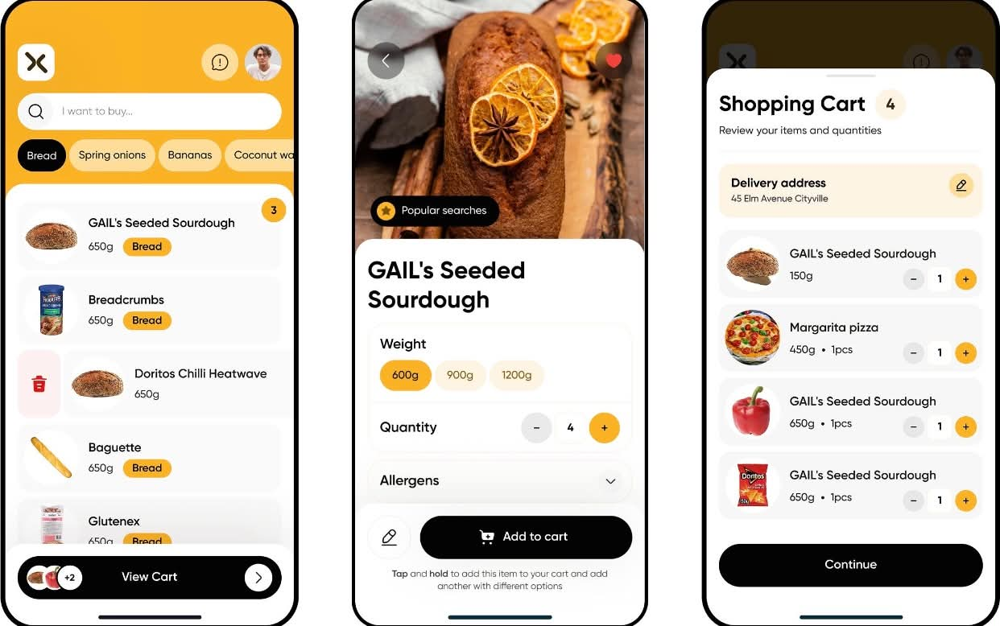

01 / PROJECTApplication concept · Networking
The effectiveness of using a hypermarket application using network
A smart hypermarket application that lets customers browse and search for products, view prices and offers, add items to a cart, and place orders online. An AI-powered feature can recommend products based on customers’ needs and preferences.